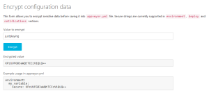

Let’s use AppVeyor CI for Windows to automatically build and publish our new commits and releases to biicode.
GitHub or Bitbucket enable creating remote repositories to develop them collaboratively.
First, put your repo into a biicode block, we’re using GitHub in this tutorial, but same basic steps apply for Bitbucket repos. Get your repo’s URL here:
Create a new biicode project, and paste the URL to clone the repository into your block:
1 2 3 4 5 | bii init myproject cd myproject bii new amalulla/cpp-expresion-parser cd blocks\amalulla\cpp-expresion-parser git clone https://github.com/MariadeAnton/cpp-expression-parser.git . |
Don’t miss the dot at the end, this copies your repo’s files and folders into your block’s main folder.
Automatically build and publish via AppVeyor CI
Login at AppVeyor with your favourite developer account and once logged-in clic on “+ new project”
Choose the repo you want to deploy with AppVeyor:
Once enabled, let’s get back to our local project and create an appveyor.yml file into your block’s folder. This file is to building and automatically publishing to biicode, after that it will check if your biicode.conf file [parents] have been updated while publishing and committing the changes to github. This is the one I’m using, but you can configure it to fit your needs:
1 2 3 4 5 6 7 8 9 10 11 12 13 14 15 16 17 18 19 20 21 22 23 24 25 26 27 28 29 30 31 32 33 34 35 36 37 38 39 40 41 42 43 44 45 46 47 48 49 50 51 52 53 54 55 56 57 58 59 60 61 62 63 64 65 | version: 1.0.{build} install: - ps: wget https://s3.amazonaws.com/biibinaries/thirdparty/cmake-3.0.2-win32-x86.zip -OutFile cmake.zip - cmd: echo "Unzipping cmake..." - cmd: 7z x cmake.zip -o"C:\Program Files (x86)\" -y > nul - cmd: set PATH=%PATH:CMake 2.8\bin=%;C:\Program Files (x86)\cmake-3.0.2-win32-x86\bin - cmd: cmake --version - cmd: echo "Downloading biicode..." - ps: wget http://www.biicode.com/downloads/latest/win -OutFile bii-win.exe - cmd: bii-win.exe /VERYSILENT - cmd: set PATH=%PATH%;C:\Program Files (x86)\BiiCode\bii - cmd: bii -v - cmd: del bii-win.exe - cmd: del cmake.zip before_build: - cmd: bii init -L # copy files and folders - cmd: xcopy "%APPVEYOR_BUILD_FOLDER%" blocks\%block_user%\%block_name%\ /e - cmd: bii configure -G "Visual Studio 12" build_script: - cmd: bii build test_script: - cmd: cd bin - cmd: amalulla_cpp-expression-parser_test-shunting-yard.exe # to run your custom scripts instead of provider deployments deploy_script: - cmd: bii user %block_user% -p %secured_passwd% - if defined APPVEYOR_REPO_TAG_NAME set VERSION=%APPVEYOR_REPO_TAG_NAME% - if defined APPVEYOR_REPO_TAG_NAME bii publish -r --tag=%tag% --versiontag=%VERSION% - if not defined APPVEYOR_REPO_TAG_NAME bii publish -r on_success: - ps: | git checkout "$env:APPVEYOR_REPO_BRANCH" git config --global core.autocrlf true git config --global credential.helper store Add-Content "$env:USERPROFILE\.git-credentials" "https://$($env:access_token):x-oauth-basic@github.com`n" git remote add neworigin "$env:github_repo" git config --global user.email "$env:github_email" git config --global user.name "$env:github_user" git add . git commit -m "Updated biicode parents [skip ci]" git push neworigin "$env:APPVEYOR_REPO_BRANCH" environment: block_user: "amalulla" block_name: "cpp-expression-parser" secured_passwd: secure: ZMvgETfLAUo7kISnvrinBA== access_token: secure: GdIDIRkmsM9blqS143lQErkxguMYgJBs74GzWw+lgzjvl/NoLs4ErcOZ2JBAEmkr tag: "STABLE" github_user: "MariadeAnton" github_email: "maria.deanton@biicode.com" github_repo: "git@github.com:MariadeAnton/cpp-expression-parser.git" |
Let’s take a deeper look into this file to adapt it to your build config, changes are only needed in test_script and enviroment values, other changes may depend on what you will use Appveyor for:
- install: Just copy this part, it installs all tools required to deploy your biicode projects in AppVeyor.
- before_build: Copy your project’s files into the biicode project and configure it to use Visual Studio 12 via
bii cpp:configure. Check biicode docs and your project’s settings in Appveyor to use other build configurations. *Also note that there’s a commented line here you should also write if your project contains folders. - build_script: builds the project via
bii cpp:build. - test_script: cd bin and execute your project. Ensure about your project’s executable, build and execute it locally via
bii cpp:build. - deploy_script: This script publishes your block to biicode, as stable including your version tag only when it’s tagged, otherwise your block is published as dev.
- on_success: If your biicode.conf file is updated commit its changes to github without launching a new build. Else do nothing.
- environment: Replace all the environment variables with your own values: project_name, tag, default version tag value…
Specifics:
Create a GitHub Personal Access Token
Here’s an appveyor guide about how to git push from build. Following this Appveyor Guide we’re using it as credentials with Git commands. Use this GitHub guide to create your personal access token.
Configuring build secure variable
Encrypt your biicode password and your access token using Encrypt Data tool and then put it as secure variable into your appveyor.yml, for example, to generate an encrypted password with Appveyor go to your profile and choose Encrypt data:
Once there, encrypt your password and copy the value generated to put it in your environment “secured_password: secure:”

When it comes to specifying your project settings, it’s useful to check them online. For example, you can skip branches without an appveyor.yml file just saying it your appveyor.yml or into their web interface. Also, AppVeyor docs explain in detail build configuration.
The icing
Put a nice AppVeyor badge to show your project builds in Windows.
Go to your projects settings>Badges, copy your repo’s badge and paste it in your README file:
Update and push to GitHub!
Add, commit and push your changes to GitHub
1 2 3 | $ git add --all $ git commit -m "commit message" $ git push origin master |
Working with tags
Using the appveyor.yml file described before, you can tag a version with git, push it to github and it will be automatically tagged in biicode too:
1 2 | git tag -a v0.1 -m 'my version 0.1' git push origin v0.1 |
Here’s Git basics about Tagging.
Unless you specify it otherwise, each time you push to AppVeyor CI System, a build launches to check everything is still working.
Check it out
Post’s original marterial is:
- Forked cpp-expresion-parser repo in GitHub from the Original repo by Brandon Amos
- cpp-expression-parser builds in AppVeyor CI and Deployment
- cpp-expression parser biicode block and with its automatically published releases
Hope you enjoy this new feature and, as always, we look forward to read what you think. Just click on the sidebar button to try biicode, check our docs, forum and/or Stackoverflow tag for questions and answers or comment below to tell us your enquiries.
Related Posts
Pingback: Getting started with OpenSSL, Git and Github - biicode Blog()